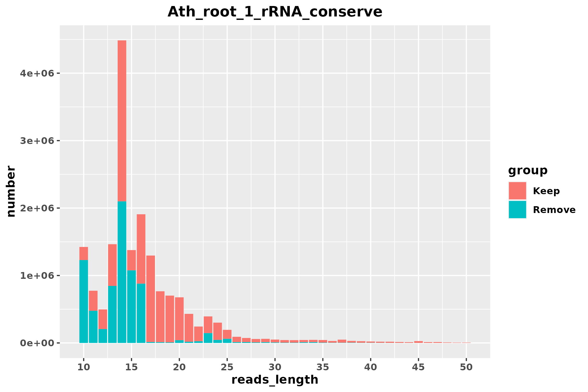
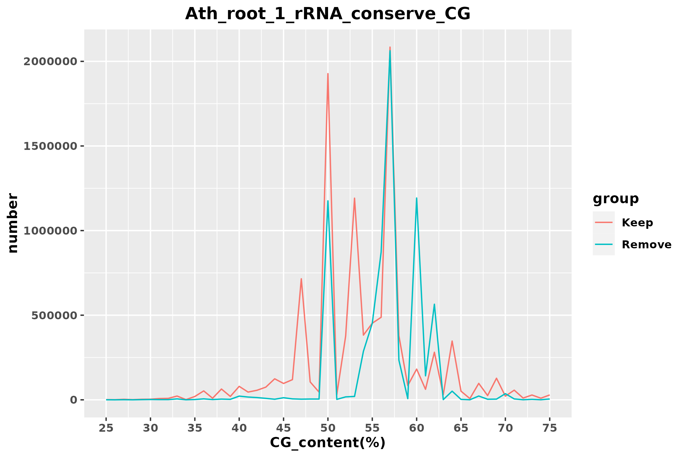
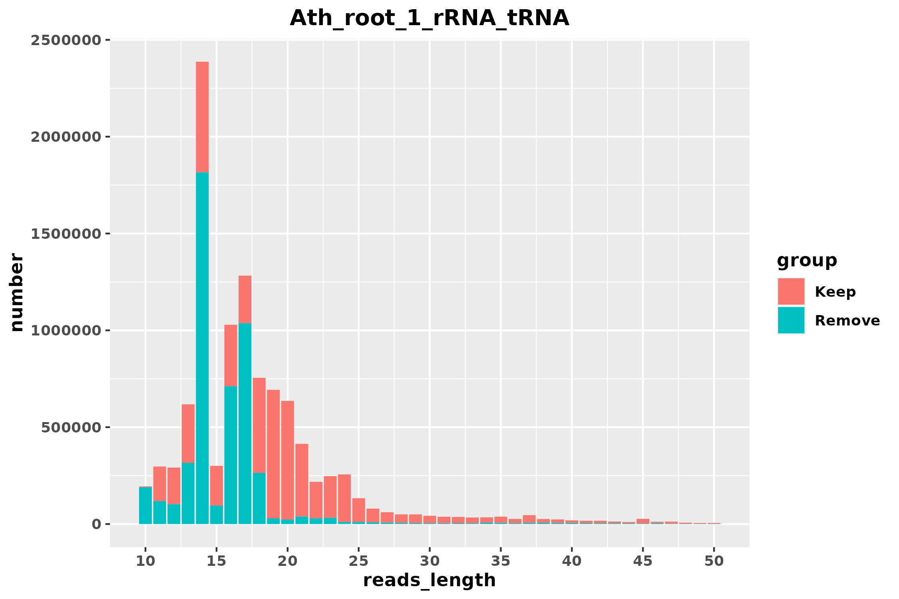
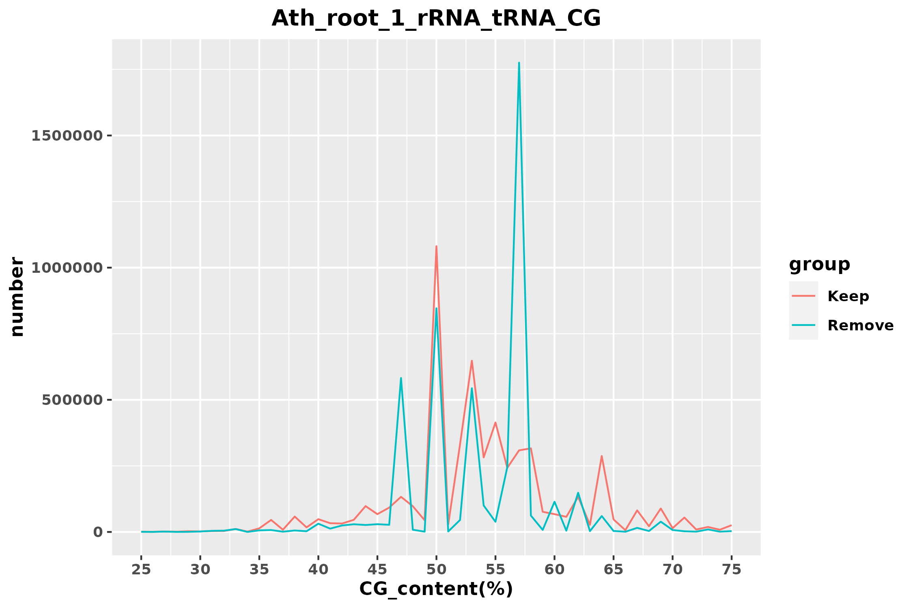
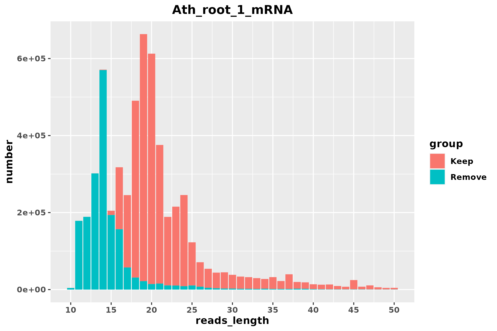
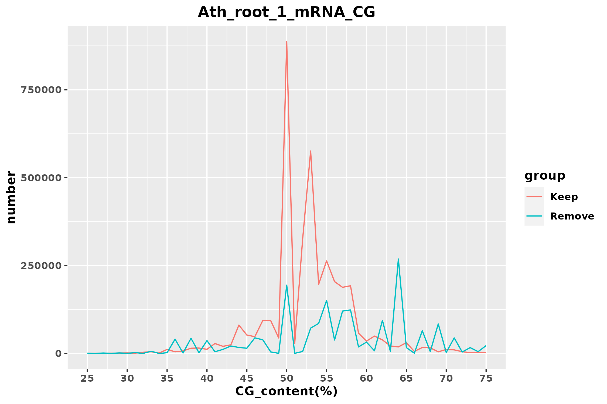

| Stage | reads | proportion | rRNA_align_rate | mRNA_align_rate |
|---|---|---|---|---|
| raw | 17822737 | 100.00% | 84.25% | 70.85% |
| Stage | reads | proportion | rRNA_align_rate | mRNA_align_rate |
|---|---|---|---|---|
| rRNA_conserve_keep | 10528531 | 59.07% | 78.45% | 55.14% |
| rRNA_conserve_remove | 7294206 | 40.93% | 92.64% | 93.53% |


| Stage | reads | proportion | rRNA_align_rate | mRNA_align_rate |
|---|---|---|---|---|
| rRNA_tRNA_keep | 5587786 | 31.35% | 69.59% | 42.75% |
| rRNA_tRNA_remove | 4940745 | 27.72% | 88.47% | 69.16% |
| Organism_name | name | Total_reads_number | Match_reads_number | Match_proportion | Bacteria_CG_content_rRNA_tRNA | Average_CG_content | Average_reads_Length |
|---|---|---|---|---|---|---|---|
| Actinomyces oris | Actinomy_oris_GCF_016127955_1 | 17822737 | 4152752 | 23.30% | 58.07% | 53.397% | 15.47 |
| Escherichia coli str. K-12 substr. MG1655 | Es_coli_K_12_MG1655 | 17822737 | 164055 | 0.92% | 53.23% | 58.919% | 20.57 |
| Streptococcus infantarius | Streptoc_infa_GCF_016127275_1 | 17822737 | 158067 | 0.89% | 51.22% | 50.003% | 21.50 |
| Streptococcus lutetiensis | Streptoc_lutet_GCF_900475675_1 | 17822737 | 157584 | 0.88% | 51.28% | 50.016% | 21.47 |
| Shigella sonnei | Shig_son_GCF_013374815_1 | 17822737 | 140389 | 0.79% | 54.98% | 60.188% | 19.13 |
| Escherichia fergusonii | Es_ferg_GCF_013892435_1 | 17822737 | 141529 | 0.79% | 54.98% | 60.659% | 19.65 |
| Shigella flexneri 2a str. 301 | Shig_flexn_2a_301 | 17822737 | 135102 | 0.76% | 54.79% | 60.583% | 18.38 |
| Es_coli_O157_H7_Sakai | 17822737 | 131899 | 0.74% | 54.94% | 60.554% | 18.08 | |
| Escherichia albertii | Es_albe_GCF_016904755_1 | 17822737 | 129133 | 0.72% | 55.05% | 60.806% | 17.72 |


| Stage | reads | proportion | rRNA_align_rate | mRNA_align_rate |
|---|---|---|---|---|
| mRNA_keep | 3765303 | 21.13% | 70.85% | 21.22% |
| mRNA_remove | 1822483 | 10.23% | 66.98% | 87.25% |
| Organism_name | name | Total_reads_number | Match_reads_number | Match_proportion | Bacteria_CG_content_mRNA | Average_CG_content | Average_reads_Length |
|---|---|---|---|---|---|---|---|
| Mesorhizobium huakuii | Mesor_huak_GCF_014189455_1 | 17822737 | 5564018 | 31.22% | 63.26% | 55.944% | 12.83 |
| Pseudomonas plecoglossicida | Pseudom_plec_GCF_003391255_1 | 17822737 | 5514340 | 30.94% | 63.41% | 55.922% | 12.83 |
| Lysinibacillus sphaericus | Lysi_sphaeri_GCF_020546525_1 | 17822737 | 4878057 | 27.37% | 37.71% | 55.512% | 12.42 |
| Acidipropionibacterium jensenii | Acidipr_jen_GCF_005890135_1 | 17822737 | 4799291 | 26.93% | 69.03% | 56.129% | 13.10 |
| Agrobacterium rhizogenes | Agr_rhizog_GCF_018138105_1 | 17822737 | 4758825 | 26.70% | 60.87% | 56.229% | 13.15 |
| Cellvibrio japonicus | Cellv_japonicus_GCF_008120875_1 | 17822737 | 4757560 | 26.69% | 52.62% | 57.158% | 14.21 |
| Arachnia rubra | Ara_rubra_GCF_018128325_1 | 17822737 | 4533698 | 25.44% | 64.89% | 55.041% | 12.31 |
| Xanthomonas translucens pv. undulosa | Xa_transluce_pv_undulosa_GCF_017301775_1 | 17822737 | 4403972 | 24.71% | 68.32% | 54.900% | 12.35 |
| Desulfosarcina ovata subsp. sediminis | Desulfos_ovata_sediminis_GCF_009688985_1 | 17822737 | 3946796 | 22.14% | 54.83% | 54.824% | 12.47 |

